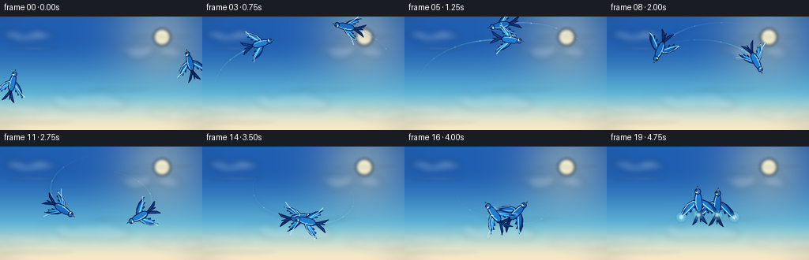
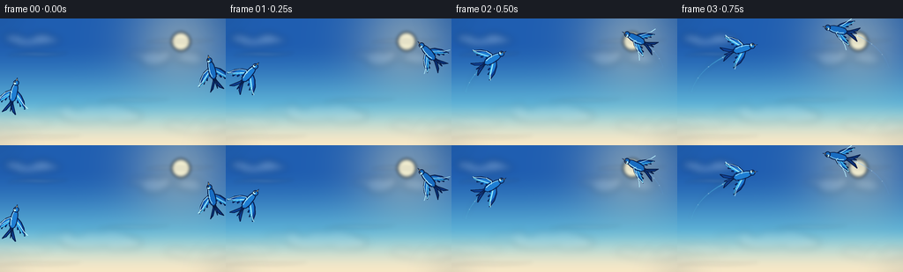
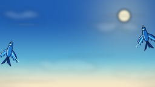
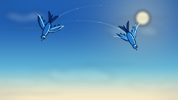
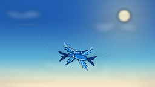
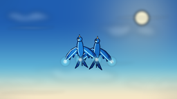
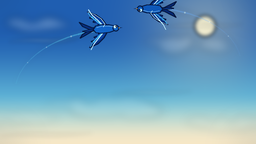

CODING AGENTS AS PIXEL WORLD MODELS
traex/DeepSeek-V4.1-Flash · instance_preservation_0018
点击播放 · 原生 RGB 像素
逐轮保存的候选
回放视频、检查图与代码变化。
每份候选均可单独播放。实际图片检查记录在下方工具轨迹中。
候选 01播放与检查图
点击播放 · 原生 RGB 像素


展开代码变化
--- 上一保存版本
+++ 本次保存版本
@@ -0,0 +1,429 @@
+from __future__ import annotations
+
+import math
+from pathlib import Path
+
+import numpy as np
+from PIL import Image, ImageDraw, ImageFilter
+
+import artifact_io
+
+
+WIDTH = 256
+HEIGHT = 144
+FRAMES = 20
+FPS = 4.0
+SUPERSAMPLE = 4
+CW = WIDTH * SUPERSAMPLE
+CH = HEIGHT * SUPERSAMPLE
+
+CENTER = np.array([128.0, 70.0])
+START_RADIUS = 112.0
+END_RADIUS = 12.0
+ORBIT_TURNS = 1.0
+
+PALETTE_A = {
+ "outline": (8, 31, 78, 255),
+ "deep": (14, 65, 150, 255),
+ "mid": (31, 126, 211, 255),
+ "bright": (82, 208, 245, 255),
+ "light": (196, 248, 255, 255),
+ "accent": (30, 91, 184, 255),
+ "eye": (3, 20, 48, 255),
+}
+
+PALETTE_B = {
+ "outline": (7, 27, 68, 255),
+ "deep": (10, 53, 129, 255),
+ "mid": (24, 108, 193, 255),
+ "bright": (69, 187, 234, 255),
+ "light": (183, 240, 255, 255),
+ "accent": (23, 77, 163, 255),
+ "eye": (3, 18, 43, 255),
+}
+
+
+def smoothstep(value):
+ value = np.clip(value, 0.0, 1.0)
+ return value * value * (3.0 - 2.0 * value)
+
+
+def state_at(bird: int, t: float) -> tuple[float, float, float, float]:
+ """Return x, y, heading in degrees, and radius for one spiral bird."""
+ t = max(0.0, min(1.0, t))
+ direction = 1.0 if bird == 0 else -1.0
+ theta0 = math.pi if bird == 0 else 0.0
+ theta = theta0 + direction * math.tau * ORBIT_TURNS * t
+ radius = START_RADIUS + (END_RADIUS - START_RADIUS) * t
+ y_bias = (14.0 if bird == 0 else -14.0) * (1.0 - t)
+ x = CENTER[0] + radius * math.cos(theta)
+ y = CENTER[1] + radius * 0.58 * math.sin(theta) + y_bias
+
+ dt = 0.0005
+ t2 = min(1.0, t + dt)
+ theta2 = theta0 + direction * math.tau * ORBIT_TURNS * t2
+ radius2 = START_RADIUS + (END_RADIUS - START_RADIUS) * t2
+ y_bias2 = (14.0 if bird == 0 else -14.0) * (1.0 - t2)
+ x2 = CENTER[0] + radius2 * math.cos(theta2)
+ y2 = CENTER[1] + radius2 * 0.58 * math.sin(theta2) + y_bias2
+ if t >= 1.0:
+ x2, y2 = x - direction * 0.01, y - 0.16
+ heading = math.degrees(math.atan2(y2 - y, x2 - x))
+ return x, y, heading, radius
+
+
+def scaled_point(point: tuple[float, float]) -> tuple[float, float]:
+ return point[0] * SUPERSAMPLE, point[1] * SUPERSAMPLE
+
+
+def transform_points(
+ points: list[tuple[float, float]],
+ x: float,
+ y: float,
+ heading_deg: float,
+ scale: float,
+) -> list[tuple[float, float]]:
+ angle = math.radians(heading_deg)
+ c, s = math.cos(angle), math.sin(angle)
+ result = []
+ for px, py in points:
+ wx = x + (px * c - py * s) * scale
+ wy = y + (px * s + py * c) * scale
+ result.append(scaled_point((wx, wy)))
+ return result
+
+
+def polygon(draw: ImageDraw.ImageDraw, points, fill, outline=None, width=0.0):
+ draw.polygon(points, fill=fill)
+ if outline is not None and width > 0:
+ draw.line(points + [points[0]], fill=outline, width=max(1, round(width * SUPERSAMPLE)), joint="curve")
+
+
+def line(draw: ImageDraw.ImageDraw, points, fill, width):
+ draw.line(points, fill=fill, width=max(1, round(width * SUPERSAMPLE)), joint="curve")
+
+
+def ribbon_polygon(points: list[tuple[float, float]], widths: list[float]):
+ if len(points) < 2:
+ return []
+ left = []
+ right = []
+ for index, point in enumerate(points):
+ if index == 0:
+ dx = points[1][0] - point[0]
+ dy = points[1][1] - point[1]
+ elif index == len(points) - 1:
+ dx = point[0] - points[index - 1][0]
+ dy = point[1] - points[index - 1][1]
+ else:
+ dx = points[index + 1][0] - points[index - 1][0]
+ dy = points[index + 1][1] - points[index - 1][1]
+ length = math.hypot(dx, dy) or 1.0
+ nx, ny = -dy / length, dx / length
+ half = widths[index] * 0.5
+ left.append(scaled_point((point[0] + nx * half, point[1] + ny * half)))
+ right.append(scaled_point((point[0] - nx * half, point[1] - ny * half)))
+ return left + right[::-1]
+
+
+def draw_ribbon(draw: ImageDraw.ImageDraw, points, widths, fill):
+ shape = ribbon_polygon(points, widths)
+ if shape:
+ draw.polygon(shape, fill=fill)
+
+
+def background(t: float) -> Image.Image:
+ y = np.linspace(0.0, 1.0, CH, dtype=np.float32)[:, None]
+ top = np.array([31, 94, 177], dtype=np.float32)
+ middle = np.array([105, 195, 222], dtype=np.float32)
+ bottom = np.array([246, 231, 198], dtype=np.float32)
+ lower_mix = smoothstep((y - 0.18) / 0.68)
+ upper = top[None, :] * (1.0 - lower_mix) + middle[None, :] * lower_mix
+ bottom_mix = smoothstep((y - 0.64) / 0.36)
+ rgb = upper[:, None, :] * (1.0 - bottom_mix[:, :, None]) + bottom[None, None, :] * bottom_mix[:, :, None]
+
+ yy, xx = np.mgrid[0:CH, 0:CW].astype(np.float32)
+ sun_x, sun_y = 205.0 * SUPERSAMPLE, 26.0 * SUPERSAMPLE
+ distance = np.sqrt((xx - sun_x) ** 2 + (yy - sun_y) ** 2)
+ glow = np.exp(-((distance / (57.0 * SUPERSAMPLE)) ** 2)) * 0.38
+ warm = np.array([255, 239, 184], dtype=np.float32)
+ rgb = rgb * (1.0 - glow[:, :, None]) + warm[None, None, :] * glow[:, :, None]
+
+ horizon_glow = np.exp(-((y - 0.86) / 0.14) ** 2) * 0.10
+ rgb = rgb * (1.0 - horizon_glow[:, :, None]) + np.array([255, 244, 218], dtype=np.float32)[None, None, :] * horizon_glow[:, :, None]
+
+ image = Image.fromarray(np.clip(rgb, 0, 255).astype(np.uint8), "RGB").convert("RGBA")
+
+ sun_layer = Image.new("RGBA", (CW, CH), (0, 0, 0, 0))
+ sun_draw = ImageDraw.Draw(sun_layer)
+ sx, sy = 205.0 * SUPERSAMPLE, 26.0 * SUPERSAMPLE
+ radius = 10.5 * SUPERSAMPLE
+ sun_draw.ellipse((sx - radius, sy - radius, sx + radius, sy + radius), fill=(255, 247, 211, 230))
+ sun_layer = sun_layer.filter(ImageFilter.GaussianBlur(2.0 * SUPERSAMPLE))
+ image = Image.alpha_composite(image, sun_layer)
+
+ cloud_layer = Image.new("RGBA", (CW, CH), (0, 0, 0, 0))
+ cloud_draw = ImageDraw.Draw(cloud_layer)
+
+ def cloud_cluster(cx, cy, width, height, alpha, drift, seed):
+ cx += drift * t
+ rng = np.random.default_rng(seed)
+ for index in range(13):
+ px = cx + (rng.random() - 0.5) * width
+ py = cy + (rng.random() - 0.5) * height * 0.65
+ ew = width * (0.16 + rng.random() * 0.24)
+ eh = height * (0.35 + rng.random() * 0.55)
+ color = (255, 252, 244, int(alpha * (0.55 + rng.random() * 0.45)))
+ cloud_draw.ellipse(
+ (
+ (px - ew * 0.5) * SUPERSAMPLE,
+ (py - eh * 0.5) * SUPERSAMPLE,
+ (px + ew * 0.5) * SUPERSAMPLE,
+ (py + eh * 0.5) * SUPERSAMPLE,
+ ),
+ fill=color,
+ )
+
+ cloud_cluster(34, 25, 57, 13, 72, 5.0, 4)
+ cloud_cluster(190, 45, 72, 15, 52, -4.0, 9)
+ cloud_cluster(104, 108, 92, 18, 38, 7.0, 14)
+ cloud_cluster(230, 124, 63, 13, 33, -5.0, 21)
+ cloud_cluster(23, 118, 55, 11, 30, 3.0, 27)
+ cloud_layer = cloud_layer.filter(ImageFilter.GaussianBlur(4.2 * SUPERSAMPLE))
+ image = Image.alpha_composite(image, cloud_layer)
+
+ wisp_layer = Image.new("RGBA", (CW, CH), (0, 0, 0, 0))
+ wisp_draw = ImageDraw.Draw(wisp_layer)
+ wisps = [
+ ((9, 42), (30, 38), (54, 43), (76, 39), 65),
+ ((166, 27), (188, 23), (214, 29), (242, 24), 55),
+ ((112, 94), (139, 90), (166, 95), (191, 91), 40),
+ ((0, 136), (31, 132), (57, 137), (91, 133), 42),
+ ]
+ for x0, p0, p1, p2, alpha in wisps:
+ points = []
+ for step in range(19):
+ u = step / 18.0
+ bx = (1 - u) ** 3 * x0[0] + 3 * (1 - u) ** 2 * u * p0[0] + 3 * (1 - u) * u ** 2 * p1[0] + u ** 3 * p2[0]
+ by = (1 - u) ** 3 * x0[1] + 3 * (1 - u) ** 2 * u * p0[1] + 3 * (1 - u) * u ** 2 * p1[1] + u ** 3 * p2[1]
+ points.append((bx + t * 2.0, by))
+ widths = [0.6 + 2.0 * math.sin(math.pi * i / 18.0) for i in range(19)]
+ draw_ribbon(wisp_draw, points, widths, (255, 253, 248, alpha))
+ wisp_layer = wisp_layer.filter(ImageFilter.GaussianBlur(2.0 * SUPERSAMPLE))
+ return Image.alpha_composite(image, wisp_layer).convert("RGB")
+
+
+def draw_trails(canvas: Image.Image, t: float) -> Image.Image:
+ glow = Image.new("RGBA", (CW, CH), (0, 0, 0, 0))
+ core = Image.new("RGBA", (CW, CH), (0, 0, 0, 0))
+ glow_draw = ImageDraw.Draw(glow)
+ core_draw = ImageDraw.Draw(core)
+ trail_span = 0.20 + 0.17 * t
+
+ for bird, color in ((0, (100, 232, 255)), (1, (104, 174, 255))):
+ start = max(0.0, t - trail_span)
+ count = 36
+ samples = []
+ for index in range(count):
+ u = index / (count - 1)
+ tt = start + (t - start) * u
+ x, y, _, _ = state_at(bird, tt)
+ samples.append((x, y))
+ for index in range(len(samples) - 1):
+ u = index / (len(samples) - 2)
+ fade = u ** 1.6
+ width = 0.45 + 1.25 * fade
+ alpha_core = int(25 + 105 * fade)
+ alpha_glow = int(8 + 58 * fade)
+ draw_ribbon(glow_draw, samples[index:index + 2], [width * 3.4, width * 3.4], color + (alpha_glow,))
+ draw_ribbon(core_draw, samples[index:index + 2], [width, width], color + (alpha_core,))
+
+ for index in (9, 17, 25, 31):
+ if index >= count - 1:
+ continue
+ u = index / (count - 1)
+ fade = u ** 1.7
+ px, py = samples[index]
+ radius = (0.45 + 0.55 * fade) * SUPERSAMPLE
+ cx, cy = px * SUPERSAMPLE, py * SUPERSAMPLE
+ glow_draw.ellipse((cx - radius * 2.4, cy - radius * 2.4, cx + radius * 2.4, cy + radius * 2.4), fill=color + (int(20 + 45 * fade),))
+ core_draw.ellipse((cx - radius, cy - radius, cx + radius, cy + radius), fill=(220, 252, 255, int(60 + 110 * fade)))
+
+ glow = glow.filter(ImageFilter.GaussianBlur(2.8 * SUPERSAMPLE))
+ canvas = Image.alpha_composite(canvas.convert("RGBA"), glow)
+ return Image.alpha_composite(canvas, core)
+
+
+def draw_bird(
+ canvas: Image.Image,
+ x: float,
+ y: float,
+ heading: float,
+ flap: float,
+ scale: float,
+ palette,
+) -> Image.Image:
+ layer = Image.new("RGBA", (CW, CH), (0, 0, 0, 0))
+ draw = ImageDraw.Draw(layer)
+ root = (-1.5, 0.0)
+ wing_y = 0.58 + 0.42 * flap
+ sweep = 2.0 * (1.0 - flap)
+
+ left_base = [
+ (-3.0, -2.0), (1.0, -5.0), (-2.0, -11.0), (-8.0, -17.0),
+ (-16.5, -21.0), (-13.0, -15.5), (-15.0, -13.7), (-10.0, -11.8),
+ (-12.0, -8.8), (-7.0, -7.0), (-7.5, -4.0), (-3.0, -2.8),
+ ]
+ right_base = [(px, -py) for px, py in left_base]
+
+ def folded(points):
+ adjusted = []
+ for px, py in points:
+ adjusted.append((px - sweep * (abs(py) / 21.0), py * wing_y))
+ return adjusted
+
+ left = folded(left_base)
+ right = folded(right_base)
+
+ # Long forked tail streamers.
+ tail_shapes = [
+ ([(-8.5, -1.2), (-14.0, -2.0), (-21.0, -5.5), (-26.0, -8.0), (-23.0, -3.8), (-16.0, -0.2)],
+ palette["deep"], palette["outline"]),
+ ([(-8.5, 1.2), (-14.0, 2.0), (-21.0, 5.5), (-26.0, 8.0), (-23.0, 3.8), (-16.0, 0.2)],
+ palette["deep"], palette["outline"]),
+ ([(-8.0, 0.0), (-15.0, 0.0), (-23.5, 1.0), (-19.0, 2.0)], palette["accent"], palette["outline"]),
+ ]
+ for shape, fill, outline in tail_shapes:
+ points = transform_points(shape, x, y, heading, scale)
+ polygon(draw, points, fill, outline, 0.9)
+
+ # Far-side wing, slightly darker.
+ left_points = transform_points(left, x, y, heading, scale)
+ polygon(draw, left_points, palette["deep"], palette["outline"], 1.0)
+ inner_left = [(root[0] + (px - root[0]) * 0.78, root[1] + (py - root[1]) * 0.78) for px, py in left]
+ polygon(draw, transform_points(inner_left, x, y, heading, scale), palette["mid"], None)
+ for feather in (
+ [(-2.5, -3.5), (-7.0, -8.0), (-13.0, -14.5), (-15.8, -20.0)],
+ [(-1.8, -3.2), (-5.5, -7.0), (-10.0, -11.3), (-12.5, -15.2)],
+ [(-1.2, -2.8), (-4.5, -5.5), (-7.5, -8.5), (-9.5, -11.8)],
+ ):
+ line(draw, transform_points(folded(feather), x, y, heading, scale), palette["bright"], 0.75)
+ line(draw, transform_points([(-2.0, -3.0), (-7.0, -8.5), (-13.0, -15.0), (-16.0, -20.2)], x, y, heading, scale), palette["light"], 0.8)
+
+ # Near-side wing.
+ right_points = transform_points(right, x, y, heading, scale)
+ polygon(draw, right_points, palette["deep"], palette["outline"], 1.0)
+ inner_right = [(root[0] + (px - root[0]) * 0.78, root[1] + (py - root[1]) * 0.78) for px, py in right]
+ polygon(draw, transform_points(inner_right, x, y, heading, scale), palette["mid"], None)
+ for feather in (
+ [(-2.5, 3.5), (-7.0, 8.0), (-13.0, 14.5), (-15.8, 20.0)],
+ [(-1.8, 3.2), (-5.5, 7.0), (-10.0, 11.3), (-12.5, 15.2)],
+ [(-1.2, 2.8), (-4.5, 5.5), (-7.5, 8.5), (-9.5, 11.8)],
+ ):
+ line(draw, transform_points(folded(feather), x, y, heading, scale), palette["bright"], 0.8)
+ line(draw, transform_points([(-2.0, 3.0), (-7.0, 8.5), (-13.0, 15.0), (-16.0, 20.2)], x, y, heading, scale), palette["light"], 0.85)
+
+ # Slender body and head.
+ body = [
+ (-12.5, 0.0), (-10.0, 3.2), (-4.0, 4.2), (4.0, 3.7),
+ (9.0, 2.2), (11.0, 0.8), (11.0, -0.8), (9.0, -2.2),
+ (4.0, -3.7), (-4.0, -4.2), (-10.0, -3.2),
+ ]
+ body_points = transform_points(body, x, y, heading, scale)
+ polygon(draw, body_points, palette["mid"], palette["outline"], 1.0)
+ body_highlight = [(-9.0, -1.7), (-4.0, -2.9), (3.0, -2.6), (8.5, -1.3)]
+ line(draw, transform_points(body_highlight, x, y, heading, scale), palette["light"], 0.75)
+
+ head_center = transform_points([(10.2, 0.0)], x, y, heading, scale)[0]
+ head_r = 3.25 * scale * SUPERSAMPLE
+ draw.ellipse(
+ (head_center[0] - head_r, head_center[1] - head_r, head_center[0] + head_r, head_center[1] + head_r),
+ fill=palette["mid"],
+ outline=palette["outline"],
+ width=max(1, round(0.9 * SUPERSAMPLE)),
+ )
+ head_light = transform_points([(9.5, -1.35)], x, y, heading, scale)[0]
+ draw.ellipse(
+ (head_light[0] - 1.35 * SUPERSAMPLE, head_light[1] - 1.35 * SUPERSAMPLE,
+ head_light[0] + 1.35 * SUPERSAMPLE, head_light[1] + 1.35 * SUPERSAMPLE),
+ fill=palette["light"],
+ )
+
+ beak = [(12.7, -0.7), (16.3, 0.0), (12.7, 0.8)]
+ polygon(draw, transform_points(beak, x, y, heading, scale), (226, 188, 104, 255), palette["outline"], 0.55)
+ eye = transform_points([(10.9, -1.45)], x, y, heading, scale)[0]
+ eye_r = 0.9 * scale * SUPERSAMPLE
+ draw.ellipse((eye[0] - eye_r, eye[1] - eye_r, eye[0] + eye_r, eye[1] + eye_r), fill=palette["eye"])
+ glint = transform_points([(11.15, -1.75)], x, y, heading, scale)[0]
+ glint_r = 0.28 * SUPERSAMPLE
+ draw.ellipse((glint[0] - glint_r, glint[1] - glint_r, glint[0] + glint_r, glint[1] + glint_r), fill=(255, 255, 255, 235))
+
+ # A thin rim of sunlight catches the leading wing edge.
+ rim = [(-2.0, -2.4), (0.0, -5.5), (-3.5, -12.0), (-9.5, -17.2), (-16.0, -20.8)]
+ line(draw, transform_points(folded(rim), x, y, heading, scale), palette["light"], 0.65)
+
+ return Image.alpha_composite(canvas.convert("RGBA"), layer)
+
+
+def render_frame(index: int) -> np.ndarray:
+ t = index / (FRAMES - 1)
+ canvas = background(t)
+ canvas = draw_trails(canvas, t)
+
+ final_blend = smoothstep((t - 0.72) / 0.28)
+ birds = []
+ for bird in (0, 1):
+ x, y, heading, radius = state_at(bird, t)
+ phase = 0.0 if bird == 0 else math.pi * 0.82
+ wave = 0.53 + 0.30 * math.sin(math.tau * 2.05 * t + phase) + 0.08 * math.sin(math.tau * 4.7 * t + phase * 0.5)
+ flap = (1.0 - final_blend) * max(0.24, min(0.92, wave)) + final_blend * 1.0
+ scale = 0.98 + 0.10 * t + 0.08 * final_blend
+ y_draw = y + (-1.2 if bird == 0 else 1.2)
+ birds.append((bird, x, y_draw, heading, flap, scale))
+
+ # The farther bird is painted first so both remain readable in the final overlap.
+ for bird, x, y, heading, flap, scale in (birds[1], birds[0]):
+ palette = PALETTE_B if bird == 1 else PALETTE_A
+ canvas = draw_bird(canvas, x, y, heading, flap, scale, palette)
+
+ if t > 0.78:
+ sparkle = Image.new("RGBA", (CW, CH), (0, 0, 0, 0))
+ sparkle_draw = ImageDraw.Draw(sparkle)
+ strength = smoothstep((t - 0.78) / 0.22)
+ for bird in (0, 1):
+ x, y, heading, _ = state_at(bird, t)
+ for offset in (-1.0, 1.0):
+ tip_local = [(-16.0, offset * 20.0)]
+ tip = transform_points(tip_local, x, y, heading, 1.14)[0]
+ r = (1.0 + 1.7 * strength) * SUPERSAMPLE
+ sparkle_draw.ellipse(
+ (tip[0] - r * 2.5, tip[1] - r * 2.5, tip[0] + r * 2.5, tip[1] + r * 2.5),
+ fill=(120, 235, 255, int(18 + 45 * strength)),
+ )
+ sparkle_draw.ellipse(
+ (tip[0] - r, tip[1] - r, tip[0] + r, tip[1] + r),
+ fill=(225, 253, 255, int(80 + 120 * strength)),
+ )
+ sparkle = sparkle.filter(ImageFilter.GaussianBlur(0.8 * SUPERSAMPLE))
+ canvas = Image.alpha_composite(canvas.convert("RGBA"), sparkle)
+
+ # Gentle vignette keeps attention on the aerial formation.
+ vignette = Image.new("L", (CW, CH), 0)
+ vignette_draw = ImageDraw.Draw(vignette)
+ vignette_draw.ellipse((-CW * 0.12, -CH * 0.18, CW * 1.12, CH * 1.18), fill=255)
+ vignette = vignette.filter(ImageFilter.GaussianBlur(18 * SUPERSAMPLE))
+ dark = Image.new("RGBA", (CW, CH), (16, 46, 74, 40))
+ dark.putalpha(Image.eval(vignette, lambda value: int((255 - value) * 0.20)))
+ canvas = Image.alpha_composite(canvas.convert("RGBA"), dark)
+
+ return np.asarray(canvas.convert("RGB").resize((WIDTH, HEIGHT), Image.Resampling.LANCZOS), dtype=np.uint8)
+
+
+def main() -> None:
+ case_dir = Path(__file__).resolve().parent
+ frames = np.stack([render_frame(index) for index in range(FRAMES)], axis=0)
+ artifact_io.save(frames, case_dir)
+
+
+if __name__ == "__main__":
+ main()
候选 02播放与检查图
点击播放 · 原生 RGB 像素

展开代码变化
--- 上一保存版本
+++ 本次保存版本
@@ -23,22 +23,22 @@
ORBIT_TURNS = 1.0
PALETTE_A = {
- "outline": (8, 31, 78, 255),
- "deep": (14, 65, 150, 255),
- "mid": (31, 126, 211, 255),
- "bright": (82, 208, 245, 255),
- "light": (196, 248, 255, 255),
- "accent": (30, 91, 184, 255),
+ "outline": (5, 24, 65, 255),
+ "deep": (7, 47, 128, 255),
+ "mid": (18, 100, 199, 255),
+ "bright": (64, 180, 238, 255),
+ "light": (203, 246, 255, 255),
+ "accent": (12, 68, 164, 255),
"eye": (3, 20, 48, 255),
}
PALETTE_B = {
- "outline": (7, 27, 68, 255),
- "deep": (10, 53, 129, 255),
- "mid": (24, 108, 193, 255),
- "bright": (69, 187, 234, 255),
- "light": (183, 240, 255, 255),
- "accent": (23, 77, 163, 255),
+ "outline": (5, 22, 61, 255),
+ "deep": (5, 40, 116, 255),
+ "mid": (13, 87, 184, 255),
+ "bright": (54, 163, 227, 255),
+ "light": (190, 239, 255, 255),
+ "accent": (9, 59, 149, 255),
"eye": (3, 18, 43, 255),
}
@@ -152,7 +152,7 @@
horizon_glow = np.exp(-((y - 0.86) / 0.14) ** 2) * 0.10
rgb = rgb * (1.0 - horizon_glow[:, :, None]) + np.array([255, 244, 218], dtype=np.float32)[None, None, :] * horizon_glow[:, :, None]
- image = Image.fromarray(np.clip(rgb, 0, 255).astype(np.uint8), "RGB").convert("RGBA")
+ image = Image.fromarray(np.clip(rgb, 0, 255).astype(np.uint8)).convert("RGBA")
sun_layer = Image.new("RGBA", (CW, CH), (0, 0, 0, 0))
sun_draw = ImageDraw.Draw(sun_layer)
@@ -301,27 +301,27 @@
left_points = transform_points(left, x, y, heading, scale)
polygon(draw, left_points, palette["deep"], palette["outline"], 1.0)
inner_left = [(root[0] + (px - root[0]) * 0.78, root[1] + (py - root[1]) * 0.78) for px, py in left]
- polygon(draw, transform_points(inner_left, x, y, heading, scale), palette["mid"], None)
+ polygon(draw, transform_points(inner_left, x, y, heading, scale), palette["accent"], None)
for feather in (
[(-2.5, -3.5), (-7.0, -8.0), (-13.0, -14.5), (-15.8, -20.0)],
[(-1.8, -3.2), (-5.5, -7.0), (-10.0, -11.3), (-12.5, -15.2)],
[(-1.2, -2.8), (-4.5, -5.5), (-7.5, -8.5), (-9.5, -11.8)],
):
- line(draw, transform_points(folded(feather), x, y, heading, scale), palette["bright"], 0.75)
- line(draw, transform_points([(-2.0, -3.0), (-7.0, -8.5), (-13.0, -15.0), (-16.0, -20.2)], x, y, heading, scale), palette["light"], 0.8)
+ line(draw, transform_points(folded(feather), x, y, heading, scale), palette["bright"], 0.65)
+ line(draw, transform_points([(-2.0, -3.0), (-7.0, -8.5), (-13.0, -15.0), (-16.0, -20.2)], x, y, heading, scale), palette["light"], 0.65)
# Near-side wing.
right_points = transform_points(right, x, y, heading, scale)
polygon(draw, right_points, palette["deep"], palette["outline"], 1.0)
inner_right = [(root[0] + (px - root[0]) * 0.78, root[1] + (py - root[1]) * 0.78) for px, py in right]
- polygon(draw, transform_points(inner_right, x, y, heading, scale), palette["mid"], None)
+ polygon(draw, transform_points(inner_right, x, y, heading, scale), palette["accent"], None)
for feather in (
[(-2.5, 3.5), (-7.0, 8.0), (-13.0, 14.5), (-15.8, 20.0)],
[(-1.8, 3.2), (-5.5, 7.0), (-10.0, 11.3), (-12.5, 15.2)],
[(-1.2, 2.8), (-4.5, 5.5), (-7.5, 8.5), (-9.5, 11.8)],
):
- line(draw, transform_points(folded(feather), x, y, heading, scale), palette["bright"], 0.8)
- line(draw, transform_points([(-2.0, 3.0), (-7.0, 8.5), (-13.0, 15.0), (-16.0, 20.2)], x, y, heading, scale), palette["light"], 0.85)
+ line(draw, transform_points(folded(feather), x, y, heading, scale), palette["bright"], 0.7)
+ line(draw, transform_points([(-2.0, 3.0), (-7.0, 8.5), (-13.0, 15.0), (-16.0, 20.2)], x, y, heading, scale), palette["light"], 0.7)
# Slender body and head.
body = [
@@ -332,7 +332,7 @@
body_points = transform_points(body, x, y, heading, scale)
polygon(draw, body_points, palette["mid"], palette["outline"], 1.0)
body_highlight = [(-9.0, -1.7), (-4.0, -2.9), (3.0, -2.6), (8.5, -1.3)]
- line(draw, transform_points(body_highlight, x, y, heading, scale), palette["light"], 0.75)
+ line(draw, transform_points(body_highlight, x, y, heading, scale), palette["light"], 0.6)
head_center = transform_points([(10.2, 0.0)], x, y, heading, scale)[0]
head_r = 3.25 * scale * SUPERSAMPLE
@@ -360,7 +360,7 @@
# A thin rim of sunlight catches the leading wing edge.
rim = [(-2.0, -2.4), (0.0, -5.5), (-3.5, -12.0), (-9.5, -17.2), (-16.0, -20.8)]
- line(draw, transform_points(folded(rim), x, y, heading, scale), palette["light"], 0.65)
+ line(draw, transform_points(folded(rim), x, y, heading, scale), palette["light"], 0.55)
return Image.alpha_composite(canvas.convert("RGBA"), layer)
候选 03播放与检查图
可观测工具轨迹
实际执行的命令与返回图片。
命令 1exit 0
/bin/bash -c "pwd && rg --files -g 'prompt.txt' -g 'GENERATION_RULES.md' -g 'task_spec.json' -g '"'!node_modules'"' -g '"'!vendor'"'"
命令 2exit 0
/bin/bash -c "ls -la && find . -maxdepth 2 -type f | sed 's#"'^./##'"' | sort | head -200"
命令 3exit 0
/bin/bash -c 'cat GENERATION_RULES.md'
命令 4exit 0
/bin/bash -c 'cat prompt.txt'
命令 5exit 0
/bin/bash -c 'cat task_spec.json'
命令 6exit 0
/bin/bash -c "sed -n '1,260p' artifact_io.py"
命令 7exit 0
/bin/bash -c "sed -n '1,260p' player_template.html"
命令 8exit 1
/bin/bash -c 'python generate.py'
命令 9exit 1
/bin/bash -c 'python generate.py'
命令 10exit 1
/bin/bash -c 'python generate.py'
命令 11exit 0
/bin/bash -c "rg -n 'palette\\[["'^]]+'"\\] \\+ \\(' generate.py"命令 12exit 0
/bin/bash -c 'python generate.py'
命令 13exit 0
/bin/bash -c 'python generate.py'
命令 14exit 0
/bin/bash -c 'ls -lh generate.py index.html pixels.npz inspection.png transition_check.png frames/*.png | tail -30'
命令 15exit 0
/bin/bash -c "python - <<'PY'
import json
from pathlib import Path
import numpy as np
from PIL import Image
frames = np.stack([np.asarray(Image.open(p).convert('RGB')) for p in sorted(Path('frames').glob('*.png'))])
print('shape:', frames.shape, 'dtype:', frames.dtype)
print('frame mean/std:', round(float(frames.mean()), 2), round(float(frames.std()), 2))
diffs = np.abs(frames[1:].astype(np.int16) - frames[:-1].astype(np.int16))
print('consecutive mean abs diff:', round(float(diffs.mean()), 2), 'min:', round(float(diffs.mean((1,2,3)).min()), 2), 'max:', round(float(diffs.mean((1,2,3)).max()), 2))
print('changed pixels per transition (mean):', round(float((diffs.max(axis=3) > 2).mean() * 100), 2), '%')
html = Path('index.html').read_text()
print('player payload:', '__DATA__' not in html, 'bytes:', len(html))
data = json.loads(Path('task_spec.json').read_text())
print('spec:', data)
PY"命令 16exit 0
/bin/bash -c 'command -v ffmpeg || true; command -v ffprobe || true; git status --short 2>/dev/null || true'
命令 17exit 1
/bin/bash -c "python - <<'PY'
from pathlib import Path
import numpy as np
from PIL import Image
p = np.load('pixels.npz')['pixels']
frames = np.stack([np.asarray(Image.open(f'frames/{i:02d}.png')) for i in range(20)])
assert p.shape == (144, 256, 20)
assert all((((p[:, :, i, 0].astype(np.uint32) << 16) | (p[:, :, i, 1].astype(np.uint32) << 8) | p[:, :, i, 2]) == frames[i]).all() for i in range(20))
print('pixels.npz matches all frames')
PY"命令 18exit 0
/bin/bash -c "python - <<'PY'
import numpy as np
from PIL import Image
p = np.load('pixels.npz')['pixels']
frames = np.stack([np.asarray(Image.open(f'frames/{i:02d}.png')) for i in range(20)])
assert p.shape == (144, 256, 20) and p.dtype == np.uint32
for i in range(20):
decoded = np.stack(((p[:, :, i] >> 16) & 255, (p[:, :, i] >> 8) & 255, p[:, :, i] & 255), axis=2).astype(np.uint8)
assert np.array_equal(decoded, frames[i])
print('pixels.npz matches all 20 PNG frames')
PY"视觉工具实际返回图片 1

视觉工具实际返回图片 2

视觉工具实际返回图片 3

视觉工具实际返回图片 4

视觉工具实际返回图片 5

视觉工具实际返回图片 6

视觉工具实际返回图片 7

保存候选 3 份；完成命令 18 次；可验证图片返回 7 张。原始 API 响应与完整日志保留在本地。